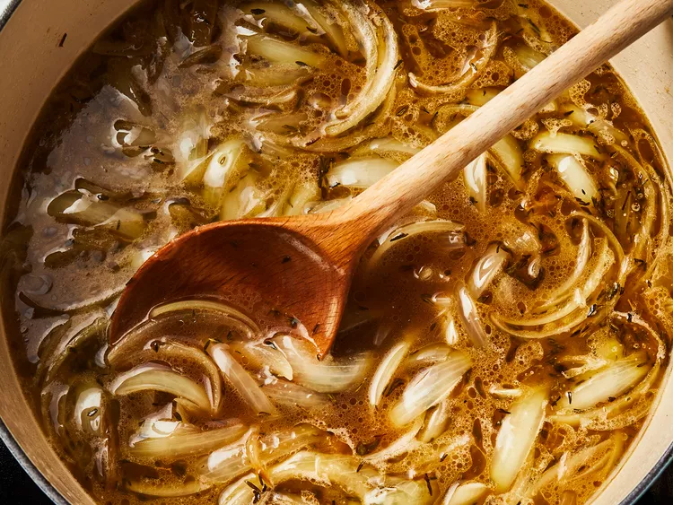

Onion Soup

The best Soup of the Nana
This is The List of Ingredients:
- ½ cup unsalted butter
- 2 tablespoons olive oil
- 2 tablespoons dry sherry
- 4 cups sliced onions
- 5 cups beef broth
- 1 teaspoon dried thyme
- 1 pinch salt and pepper to taste
- 4 slices French bread
Here's a very brief overview of what you can expect when you make homemade lasagna:
- Gather all ingredients.
- Melt butter with olive oil in an 8-quart stock pot over medium heat. Add onions to butter and continually stir until tender and translucent.
- Add beef broth, sherry, and thyme. Season with salt and pepper. Let simmer for 30 minutes.
- Ladle soup into oven-safe serving bowls and place one slice of bread on top of each (bread may be broken into pieces if you prefer).
- Place bowls on a cookie sheet and broil in the preheated oven until cheese bubbles and browns slightly, 2 to 3 minutes.
- Serve hot and enjoy!